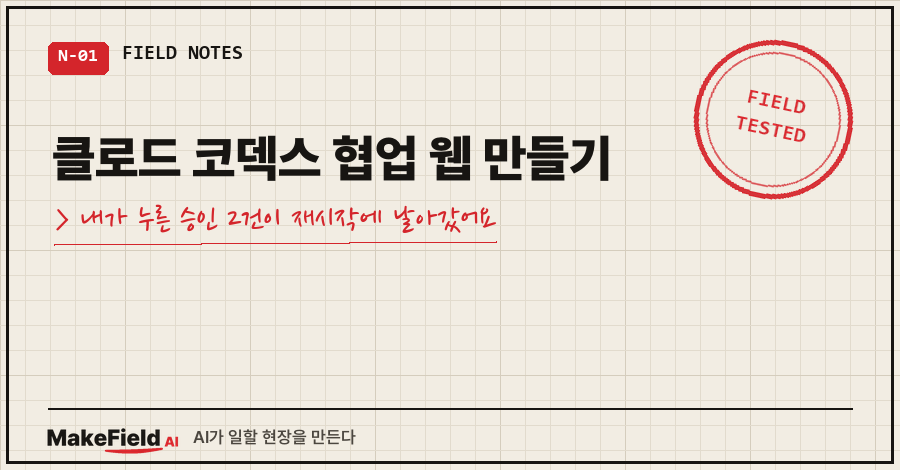
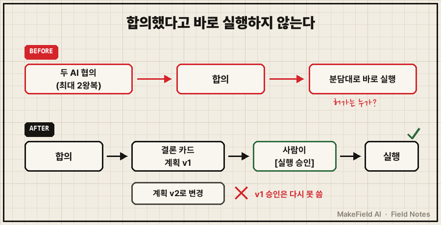
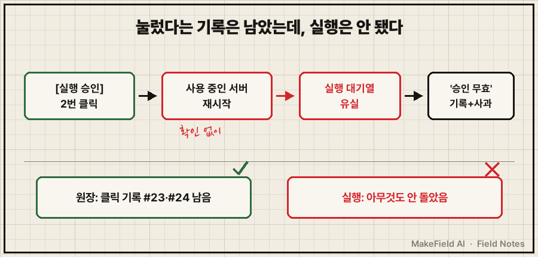
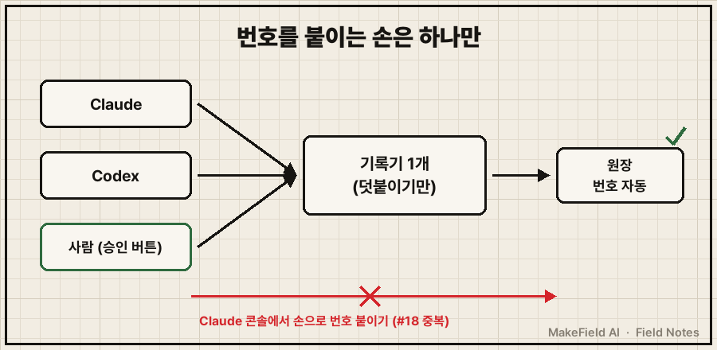

화면에서 [실행 승인] 버튼을 두 번 눌렀어요.
그리고 조금 뒤 이런 메시지가 떴습니다.
결론 #25의 실행 승인은 실행되지 못했습니다
(… 윈도우 Claude가 서버를 재시작하며 대기열 유실 — 윈도우 Claude 잘못).
이 계획(…)은 아래 v2 직접 수정으로 대체되어 무효 처리합니다.
다시 원하시면 새로 요청해 주세요.결론 #15도 똑같은 문장으로 무효가 됐어요.
클로드 코덱스 협업을 한 화면에서 하려고 만든 웹이었는데, 제가 누른 승인 2건을 만든 AI가 스스로 날린 거예요.
먼저 결론부터 적을게요. AI 둘이 합의한 것은 실행 허가가 아니고, 사람이 누른 승인은 대화가 아니라 지워지면 안 되는 기록이에요. 그리고 그 기록에 번호를 붙이는 손은 하나여야 합니다.
저는 설비 제어를 오래 해 온 현장 엔지니어고, 요즘은 일을 AI 두 개에 나눠 맡겨요. Claude가 만들고, Codex가 검토하는 식으로요.
1. 클로드 코덱스 협업, 왜 웹을 따로 만들었나요?
콘솔 창 두 개를 오가며 말을 옮기는 게 한계였어요.
Claude 창에 묻고, 답을 복사해서 Codex 창에 붙이고, Codex 답을 다시 Claude 창에 붙이고..
그날 제가 남긴 지시 원문이 이래요.
"이렇게 둘다 콘솔로 하지말고.. 너무 각각 얘기하고있으니 눈에 안들어온다. 둘이서 잘 논의해서 둘이 공통으로 움직일 수 있는 통합웹 하나 로컬에 만들어."
채팅창 하나, 발화자마다 색 구분, 결론은 별도 색 카드, 제 결정이 필요하면 공통 질문, 캡처와 파일 첨부까지 넣어 달라고 했어요.
Claude가 내놓은 첫 설계는 이랬어요. 제 메시지를 두 AI가 같이 받고(claude -p, codex exec로 각각 호출), 최대 2왕복 협의해서 합의되면 결론을 내고, 결론의 분담대로 바로 작업을 시작한다.
2. "합의 자체는 실행 허가가 아님" — 반대한 건 다른 AI였어요
그 설계안을 Codex에 보냈더니 항목별 회신이 왔어요. 그중 한 줄이 이거였습니다.
| 합의 후 자동 실행 | 반대 | 합의 자체는 실행 허가가 아님.
승인 범위·선행 완료 근거·전제 확인이 기준 |이 줄 보고 좀 뜨끔했어요. 처음 제 지시부터 "둘이 최종 협의해서 진행하도록"이었거든요.
현장에선 당연한 얘기인데 말이죠. 작업자 둘이 회의에서 "이렇게 하자" 했다고 작업허가서 없이 차단기를 올리진 않잖아요.
Claude는 반대를 전부 받아들였고, 협의는 1회 왕복으로 끝났어요. 바뀐 구조는 아래 표와 같아요.
| 항목 | 처음 설계 | 바뀐 설계 |
|---|---|---|
| 합의 후 | 분담대로 바로 실행 | 결론 카드 + [실행 승인] 버튼, 사람이 눌러야 실행 |
| 계획이 바뀌면 | 언급 없음 | 계획 버전이 새로 붙고, 옛 승인은 다시 못 씀 |
| 무응답·형식 오류 | 언급 없음 | 동의로 치지 않고 제게 질문으로 넘김 |
| 누가 말했나 | 모델 출력의 이름 | 실행기가 호출 대상에 따라 붙임(모델이 쓴 이름은 안 믿음) |
| 재시작 시 | 언급 없음 | 하던 요청은 '중단됨' 표시, 자동 재실행 안 함 |

3. 써 보니 "답을 안 해주네?"부터 나왔어요
웹을 띄우고 메시지를 보냈는데 한참 조용했어요. 제가 친 말은 딱 이거였습니다.
"답을 안해주네?"
"뭐 요청 이력이나 대기상태나 지금 읽고잇거나 ui적으로 보여줘야할거같은데 아무것도 안되니 답답하다."
돌고 있는 건지 멈춘 건지, 화면만 봐선 알 수가 없었거든요.
그래서 v2를 만들었어요. 바로 대답하는 걸 먼저 띄우고, 지금 읽는 파일과 돌리는 명령을 실시간으로 보여주고, 대기열과 배지, 대화 목록, 전체 취소 버튼을 넣었습니다.
4. v2를 고치다 서버를 재시작했고, 번호까지 꼬였어요
문제는 v2로 고치는 그 사이에 터졌어요.
제가 결론 두 개에 [실행 승인]을 누른 뒤, Claude가 제가 쓰고 있던 서버를 확인 없이 재시작했어요.
웃긴 건 버튼 클릭은 기록에 남아 있었다는 거예요. 원장(지우지 않고 덧붙이기만 하는 기록 파일)엔 이렇게 찍혀 있었어요.
## [#23]
[기록자 주석, 원문 아님] 사용자가 협업웹에서 결론 #25 … [실행 승인] 버튼을 누름
## [#24]
[기록자 주석, 원문 아님] 사용자가 협업웹에서 결론 #15 … [실행 승인] 버튼을 누름눌렀다는 사실은 남았는데, 실행 대기열이 날아가서 실행은 안 된 거예요. 합의문에 '재시작하면 중단됨 표시' 조항까지 있었는데도요.
결국 맨 위의 '승인 무효' 메시지와 사과가 남았고, 두 계획은 v2 직접 수정으로 대체됐어요.

같은 날 하나 더 있어요. Claude가 콘솔에서 제 말을 원장에 옮기면서 번호를 손으로 붙였는데, 웹이 이미 #18~#24를 써 놓은 뒤였어요. 그래서 #18이 두 개가 됐습니다.
이건 지우지 않았어요. 줄은 그대로 두고 아래에 "실제 순번은 #25" 정정 주석을 달았고, 그 뒤로는 번호를 붙이는 기록 도구로만 기록하게 바꿨어요.
그 뒤엔 반대 방향 사고도 있었어요. 그날 Codex가 같은 주소에 자기가 만든 새 앱을 올렸는데(기존 웹이 쉬는 중인지 두 번 확인하고, 기존 기록은 해시까지 맞춰 복사했어요), 다음 날 Claude는 여전히 "옛 실행 파일로 켜세요"라고 안내했거든요. 둘 다 켜면 주소가 충돌하는 상황이라 오안내로 정정했습니다.
5. AI 두 개 같이 쓸 때 정한 4가지
| 자리 | 규칙 |
|---|---|
| 실행 | 합의는 제안일 뿐, 사람 승인 + 계획 버전이 붙어야 실행 |
| 재시작 | 쓰는 중인지 먼저 확인하고 끈다 (Codex가 앱을 갈아끼울 때 보여준 순서) |
| 번호 | 기록에 번호를 붙이는 건 기록기 하나만 |
| 안내 | "이걸로 켜세요" 전에 지금 누가 마지막으로 바꿨는지 확인 |

자주 묻는 질문
Q. 클로드 코덱스 협업, 꼭 웹까지 만들어야 하나요?
아니요. 두 AI가 파일로 협의문을 주고받아도 돼요. 저도 웹 전엔 그렇게 했어요. 다만 왔다 갔다가 많아지면 한 화면에 모으는 게 눈이 편했고, 대신 위 4가지를 같이 챙겨야 했습니다.
Q. AI끼리 합의하면 그냥 자동 실행시키면 안 되나요?
되돌리기 쉬운 일이면 괜찮을 수도 있어요. 그런데 합의는 "이렇게 하자"까지고, 무엇을 어디까지 해도 되는지는 아무도 안 정한 상태예요. 그래서 저는 승인 버튼에 계획 버전을 묶었어요. 계획이 바뀌면 다시 눌러야 합니다.
Q. 승인 기록이 남았는데 왜 실행이 안 됐나요?
기록과 실행 대기열이 따로 있었기 때문이에요. 클릭은 원장에 남았지만, 재시작으로 실행 대기열이 사라졌어요. "눌렀다"와 "실행됐다"는 다른 기록이라는 걸 그날 배웠습니다.
여러분은 AI 둘한테 일을 맡길 때 "이제 실행해도 된다"를 누가 정하고 계세요?
현장 작업허가서가 굳이 종이에 사인을 받는 이유도 같아요. 말로 한 합의는 남지 않고, 사인한 것만 남으니까요.
두 AI를 붙여 쓰는 웹을 어떻게 고쳐 가는지는 makefield.ai에 계속 적어 두고 있습니다.
태그: #클로드코덱스협업 #클로드코덱스 #ClaudeCode #Codex #클로드코드 #AI두개협업 #멀티에이전트 #AI에이전트 #AI협업웹 #승인버튼 #실행승인 #appendonly #작업기록 #개인자동화 #MakeFieldAI